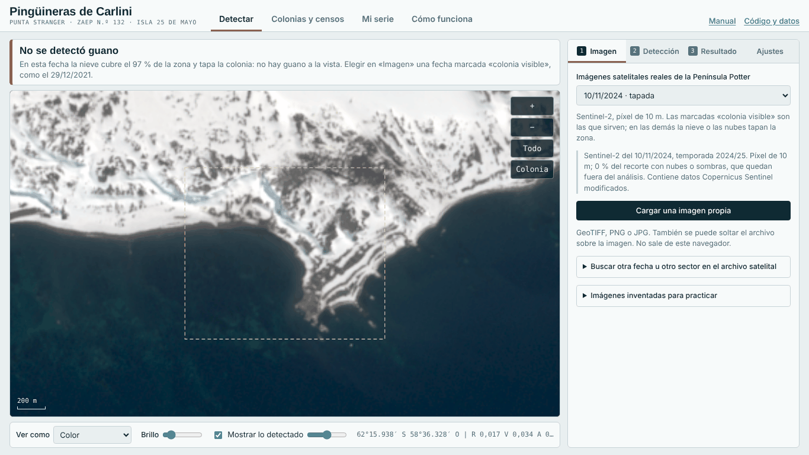
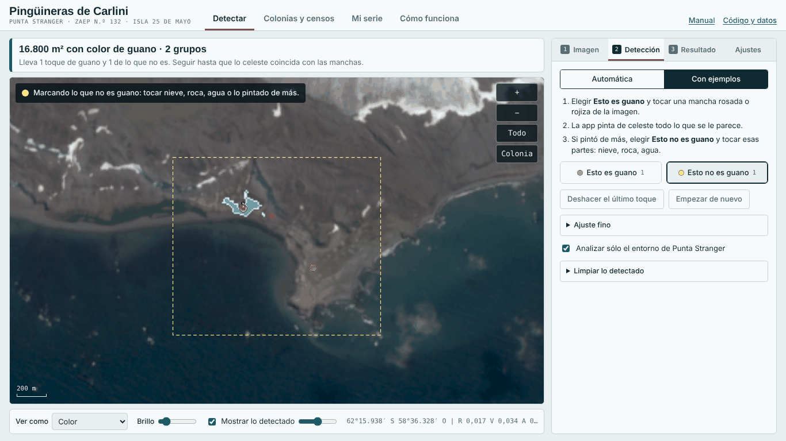
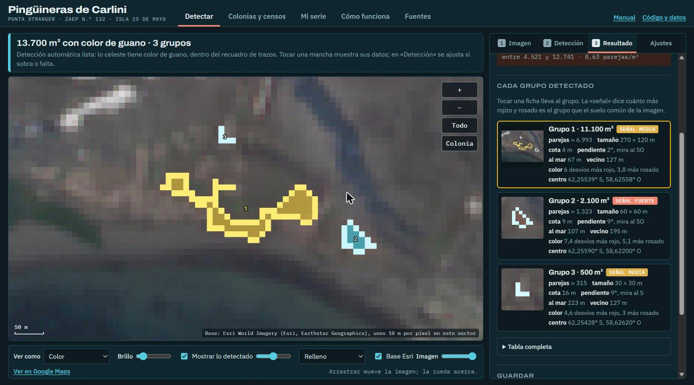
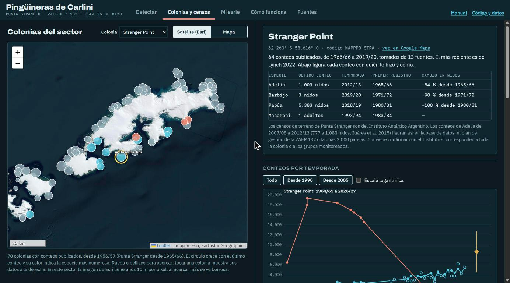
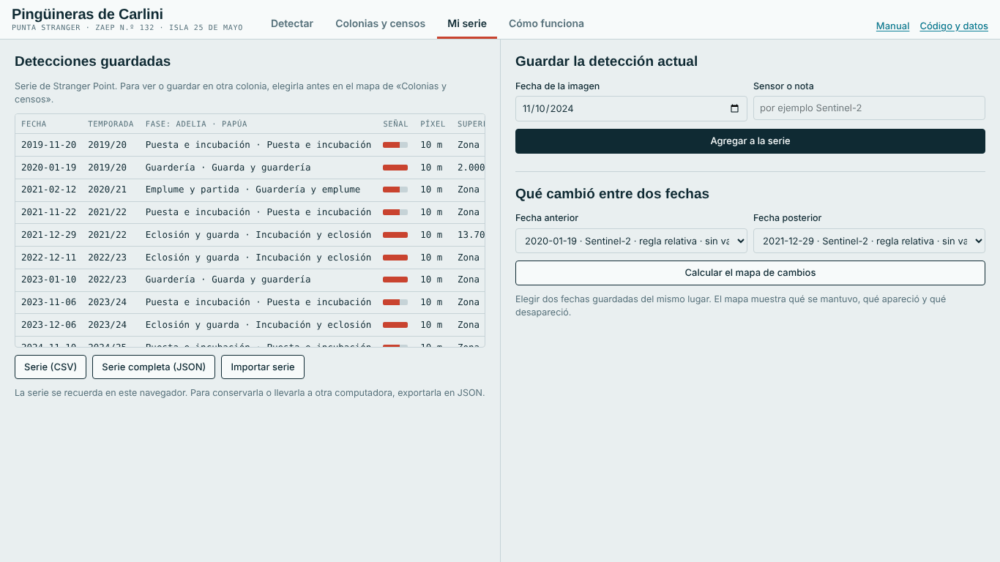

Volver a la herramienta · Descargar en Word
Isla 25 de Mayo · Shetland del Sur · ZAEP N.º 132
Manual de Pingüineras de Carlini
Cómo cargar una imagen, detectar el guano, estimar parejas y seguir una colonia por temporadas.
1. Qué es y qué no es
Pingüineras de Carlini es una herramienta web para encontrar colonias de pingüinos en imágenes satelitales y aéreas, medirlas y seguirlas en el tiempo. Trabaja sobre la mancha de guano, no sobre las aves: a la resolución de un satélite un pingüino no llega a ocupar un píxel.
No es un censo. Da superficies con color de guano y una estimación de parejas que depende de una densidad supuesta. Todo resultado necesita revisión visual y, cuando existe, contraste con el censo de terreno.
Dirección: https://surtecto.github.io/pinguineras-carlini/ · Funciona en cualquier navegador actual, en computadora o teléfono. Las imágenes se procesan en el propio navegador: nada se sube a un servidor.
2. La pantalla

La herramienta ocupa una sola pantalla, sin desplazamiento. Arriba hay cinco pestañas:
| Pestaña | Para qué sirve |
|---|---|
| Detectar | La imagen, la detección del guano y el resultado |
| Colonias y censos | Mapa de las 70 colonias del sector, conteos publicados por temporada y calendario reproductivo |
| Mi serie | Las detecciones guardadas con su fecha y la comparación entre dos de ellas |
| Cómo funciona | Los cuatro pasos de uso y las notas sobre el método y sus límites |
| Fuentes | Autores y enlaces de cada censo, imagen, relieve, ortomosaico y trabajo de método |
En «Detectar», el panel de la derecha sigue el orden del trabajo: 1 Imagen, 2 Detección, 3 Resultado. «Ajustes» reúne lo que rara vez hace falta tocar.
La franja sobre la imagen
Dice en una línea qué se detectó (superficie y cantidad de grupos) y, debajo, qué está pasando y qué conviene hacer. Si el resultado es cero, explica por qué: casi siempre porque la nieve o las nubes tapan la colonia en esa fecha.
3. Uso en cuatro pasos
- Elegir una imagen en «1 Imagen». Conviene empezar por una fecha marcada «colonia visible».
- La app detecta sola: al abrir la imagen busca el color del guano y lo pinta de celeste. No hay que marcar nada.
- Si pintó de más o de menos, corregir en «2 Detección».
- Leer la superficie, los grupos y las parejas en «3 Resultado» y, si interesa, pulsar «Agregar esta detección a mi serie».
4. Paso 1: la imagen
Imágenes incluidas
Trece recortes Sentinel-2 reales de la Península Potter, de 2019 a 2025, con píxel de 10 m. El menú las separa en dos grupos: «Con la colonia visible» (19/01/2020 y 29/12/2021) y «Colonia tapada por nieve o nubes» (las once restantes). Las tapadas sirven para ver el estado de la nieve, no para medir.

Imagen propia
- «Cargar una imagen propia» acepta GeoTIFF, PNG o JPG. También se puede soltar el archivo sobre la imagen.
- El GeoTIFF conserva bandas, coordenadas y tamaño de píxel. Admite WGS 84, UTM y la estereográfica polar antártica EPSG:3031.
- PNG o JPG sirven para capturas u ortofotos, pero no traen escala: se indica en «Ajustes», «Bandas y escala de la imagen».
Buscar otra fecha u otro sector
Abrir «Buscar otra fecha u otro sector en el archivo satelital», elegir sector y temporada y pulsar «Buscar». La herramienta consulta el archivo abierto de Copernicus, mide las nubes sobre el sector y lista hasta doce fechas, de la más despejada a la más nublada. Al tocar una, baja sólo el recorte. Puede tardar uno o dos minutos por imagen. Hay seis sectores: Península Potter, Península Barton, Isla Ardley y Fildes, Bahía Almirantazgo, Lions Rump y Punta Armonía.
Ortomosaicos de dron
El bloque «Ortomosaicos de dron» lista los 88 mosaicos públicos de la Isla 25 de Mayo (KGI-SESMAP, Fudala y Bialik 2025, licencia CC0), de 1 a 5 cm por píxel, con fecha, tamaño y enlace de descarga. Se volaron para censar elefantes marinos; en tres se ven pingüinos: Península Potter 14/10/2022, Lions Rump 23/10/2024 y Patelnia 20/11/2019.
No se abren solos porque pesan entre 35 MB y 3 GB cada uno y el repositorio no permite que otra página los lea por partes. El camino es:
- Bajar el archivo desde la lista y soltarlo sobre la imagen.
- La app arma una vista general reducida. En archivos de 1 a 3 GB tarda unos minutos y muestra el avance.
- En «Detección», marcar una zona con «Marcar una zona» o «Dibujar otra» y pulsar «Ver la zona a resolución completa». Hasta 9 megapíxeles se leen sin reducir: a 2 cm por píxel, unos 60 × 60 m.
- Sobre ese recorte se puede detectar guano y, en «Ajustes», contar individuos. «Volver a la imagen completa» regresa a la vista general.
Imágenes inventadas para practicar
Tres escenas sintéticas: una satelital, la misma años después y una de dron. Traen la respuesta correcta, así que la app dice cuánto acertó. No son imágenes de Carlini.
5. Paso 2: la detección
Automática
Es el modo inicial. La app busca píxeles más rojizos y más rosados que el suelo común de esa imagen, y descarta agua, nieve, vegetación y sombras. Dos perillas la regulan:
- «Cuánto más rojo que el suelo común»: subirla si pinta de más; bajarla si no encuentra nada.
- «Cuánto más rosado que el suelo común»: el tinte rosado es la huella del krill en el guano.
- «Adaptar los umbrales a cada imagen» conviene dejarlo activado: los valores fijos que sirven en una fecha fallan en otra con distinto sol.
- «Más umbrales» abre brillo mínimo y máximo y los límites de vegetación, agua y nieve.
Con ejemplos

Sirve cuando la detección automática no convence. En lugar de mover perillas, se le muestra a la app qué es guano y qué no:
- Elegir «Esto es guano» y tocar una mancha rosada o rojiza de la imagen. Queda un punto rosa.
- La app pinta de celeste lo que se parece a ese toque y no se parece al suelo común que lo rodea.
- Si pintó de más, elegir «Esto no es guano» y tocar esas partes. Queda un punto amarillo y lo celeste se achica.
- Repetir hasta que lo celeste coincida con las manchas. «Deshacer el último toque» y «Empezar de nuevo» corrigen errores.
Tocar marca; arrastrar sigue moviendo la imagen. Un toque nunca pinta mar, nieve ni vegetación. El cartel sobre la imagen recuerda qué se está marcando. En «Ajuste fino» se cambia el tamaño de cada toque y cuánto puede alejarse un píxel del guano marcado.
Zona de interés y limpieza
- «Analizar sólo el entorno de Punta Stranger» limita la detección al recuadro amarillo de trazos. Al desactivarlo aparecen falsos positivos del resto de la península, entre ellos los techos de la base.
- «Editar la zona» muestra ocho cuadraditos en el recuadro: arrastrarlos cambia el tamaño; arrastrar el interior lo mueve. La medida en metros se lee sobre el borde. «Listo» termina la edición y la detección se recalcula.
- «Dibujar otra» reemplaza el recuadro arrastrando de una esquina a la opuesta. «Restablecer» vuelve al original. En una imagen propia, «Marcar una zona» crea el recuadro.
- «Limpiar lo detectado» quita puntos sueltos, cierra huecos y descarta grupos menores a una superficie.
6. Paso 3: el resultado

Arriba, un aviso indica para qué sirve la resolución de la imagen. Luego la superficie con guano, la cantidad de grupos y las parejas estimadas con su rango.
Cada grupo detectado tiene una ficha con su miniatura, superficie, parejas estimadas, tamaño, cota, pendiente y orientación, distancia al mar y al grupo vecino, y coordenadas del centro. La etiqueta «señal» resume cuánto se aparta su color del suelo común de la imagen: fuerte desde 7 desvíos de enrojecimiento, media desde 4,5 y débil por debajo. Una señal débil pide revisión visual. Tocar una ficha lleva al grupo y lo resalta en amarillo. «Tabla completa» abre la misma información en columnas:
| Columna | Significado |
|---|---|
| Superficie | Área del grupo en planta |
| Parejas | Superficie por la densidad central |
| Cota y Pend. | Altura y pendiente medias del grupo |
| Mira al | Hacia dónde baja la ladera. En el sur, las caras al norte reciben más sol |
| Al mar | Distancia del borde del grupo al agua más cercana |
| Vecino | Distancia al centro del grupo más próximo |
| Centro | Latitud y longitud, o píxel si la imagen no está georreferenciada |
En «Guardar»: «Agregar esta detección a mi serie» lleva a la pestaña «Mi serie»; los demás botones bajan la tabla de grupos (CSV), los polígonos para QGIS (GeoJSON) y el mapa con lo detectado (PNG).
7. La imagen: moverse y mirar
- Mover: arrastrar. Acercar: rueda del ratón, pellizco o los botones + y −.
- «Colonia» encuadra la zona de Punta Stranger; «Todo» muestra la imagen completa. Al abrir una imagen incluida, la vista arranca en la colonia.
- Con el teclado: flechas para desplazar, + y − para acercar, 0 para ver todo.
- «Ver como» cambia entre color, falso color infrarrojo, enrojecimiento, tinte rosado, NDVI, elevación, pendiente y sombreado.
- «Brillo» aclara u oscurece. «Mostrar lo detectado» enciende o apaga lo celeste y regula su transparencia.
- «Sólo contorno» deja ver la imagen debajo de lo detectado.
- «Base Esri» dibuja debajo y alrededor de la imagen el mosaico satelital de Esri, y «Imagen» vuelve transparente la imagen de análisis para compararlas. En este sector la base de Esri tiene unos 10 m por píxel: sirve de contexto, no agrega detalle.
- «Ver en Google Maps» abre en otra pestaña la vista satelital de Google centrada en lo que se está mirando. La imagen de Google no se incrusta porque sus condiciones de uso no lo permiten fuera de su propio servicio.
- A la derecha de esa barra se leen las coordenadas y los valores del píxel bajo el cursor.
8. Ajustes
De superficie a parejas
Parejas = superficie × densidad de nidos. El valor inicial, 0,63 ± 0,3 parejas por metro cuadrado, proviene de colonias de Adelia de Mawson. No hay un valor general publicado para el papúa. Para calibrar, escribir las parejas contadas en terreno y pulsar «Calibrar»: la app divide por la superficie detectada y usa ese cociente, válido para esa imagen y esa fecha.
Bandas y escala de la imagen
- «Orden de bandas» indica qué banda del archivo es roja, verde, azul e infrarroja. Hay órdenes prefijados para PlanetScope, Sentinel-2, WorldView y Landsat.
- «Tamaño de píxel» se lee solo del GeoTIFF. En una captura, escribirlo o usar «Medir»: tocar los dos extremos de una distancia conocida y anotar los metros.
- Sin escala las superficies quedan en píxeles y no hay estimación de parejas.
Relieve
Las imágenes incluidas reciben solas el relieve Copernicus de 30 m. Para una imagen propia georreferenciada se puede cargar un GeoTIFF de Copernicus DEM o REMA. Con relieve, cada grupo recibe cota, pendiente y orientación, y «Descartar lo que esté fuera de estos límites» elimina detecciones en pendientes o cotas donde no se anida. Un relieve de 30 m sirve para descartar laderas, no para medir microrrelieve.
Contar individuos
Se habilita con píxeles de hasta 15 cm, es decir, dron o foto aérea. Busca manchas oscuras compactas del tamaño de un ave. Cuenta aves presentes, no nidos, y puede tomar piedras o sombras por aves.
9. Colonias y censos

- El mapa muestra las 70 colonias con conteos publicados sobre la imagen satelital de Esri o sobre el mapa de OpenStreetMap. Se acerca con la rueda, el pellizco o los botones + y −. El tamaño del círculo crece con el último conteo; el color indica la especie más numerosa. El menú «Colonia» lleva a una colonia por su nombre.
- La ficha dice cuántos conteos hay, de qué temporadas y de cuántas fuentes, y trae un enlace a Google Maps.
- El gráfico dibuja los conteos por temporada. Rueda del ratón para acercar en el tiempo, arrastrar para desplazarse, doble clic para volver a ver todo. «Desde 1990» y «Desde 2005» acercan de un toque; «Escala logarítmica» deja ver juntas series de tamaños muy distintos; tocar una especie en la leyenda la oculta. Al pasar sobre un punto se lee el conteo, su fuente y el método.
- «Cada conteo y su fuente» lista temporada, especie, conteo, qué se contó (nidos, pichones o adultos), precisión declarada, método (terreno, dron, aéreo, satélite, embarcación) y la publicación de origen, con enlace.
- «Quién investigó esta colonia» da la cita completa de cada publicación y cuántos conteos aporta.
- El calendario indica la fase del ciclo de cada especie y la intensidad esperada de la señal de guano.
Los conteos provienen de MAPPPD, que reúne publicaciones de muchos equipos. En Punta Stranger los censos de terreno son del Instituto Antártico Argentino.
10. Mi serie

- A la izquierda, las detecciones guardadas de la colonia elegida, con fecha, temporada, fase del ciclo y superficie.
- «Agregar a la serie» guarda la detección actual con su fecha. La temporada va de julio a junio.
- «Qué cambió entre dos fechas» calcula qué superficie se mantiene, aparece y desaparece, y avisa si las imágenes son de fases distintas o de píxeles muy diferentes.
- La serie se recuerda en el navegador. Para conservarla o llevarla a otra computadora, exportarla en JSON e importarla después.
El sitio trae una serie inicial con las 13 imágenes Sentinel-2. Once figuran como «zona bajo nieve, nubes o sombra»: ese vacío es un resultado, no un error.
11. Fuentes
La pestaña «Fuentes» reúne, con autores y enlaces: las 61 publicaciones de las que salen los conteos del sector; las imágenes, el relieve y los mapas de base; los ortomosaicos de dron y otros conjuntos con individuos visibles; los trabajos sobre Punta Stranger y la ZAEP 132; los trabajos de método; y los programas usados.
12. Cómo leer un resultado
- Qué se confunde con guano: techos y edificios rojizos, barro de revolcaderos de elefantes marinos, líquenes anaranjados, roca oxidada, nieve con algas rojas.
- La mejor ventana es de fines de diciembre a enero. Antes puede haber nieve sobre la colonia; después la mancha se lava.
- Comparar entre años sólo imágenes de la misma fase y del mismo sensor.
- Con píxeles de 10 m la superficie sale sobreestimada y los grupos chicos no aparecen.
- Una colonia abandonada sigue manchando el suelo: la imagen no distingue por sí sola pasado de presente.
13. Problemas frecuentes
| Qué pasa | Qué hacer |
|---|---|
| «No se detectó guano» y la franja habla de nieve o nubes | Elegir una fecha marcada «colonia visible» |
| «No se detectó guano» sin nieve ni nubes | En «Detección», bajar las dos perillas o pasar a «Con ejemplos» |
| Pinta de más | Subir las perillas; en «Con ejemplos», tocar lo sobrante con «Esto no es guano»; dejar activada la zona de interés |
| Toqué la imagen y no pasó nada | En modo «Automática» un toque sólo selecciona un grupo. Para marcar, pasar a «Con ejemplos» |
| No veo la colonia | Pulsar «Colonia» sobre la imagen |
| La base de Esri se ve borrosa al acercar | En este sector Esri tiene unos 10 m por píxel. Usar «Ver en Google Maps» o un ortomosaico de dron |
| Solté un ortomosaico y tarda | La vista general de un archivo de 1 a 3 GB lleva unos minutos; el avance se lee sobre la imagen |
| No aparece «Ver la zona a resolución completa» | Hace falta una zona marcada y activa, y que la imagen sea un GeoTIFF que se haya reducido al cargarlo |
| «Sin escala» | En «Ajustes», escribir el tamaño de píxel o medir una distancia conocida |
| La búsqueda en el archivo falla o tarda | Algunas redes bloquean o demoran esos servidores. Probar con otra conexión |
| «Esa escena no cubre el sector completo» | El sector cae en el borde de una tesela. Elegir otra fecha |
| El conteo de individuos está deshabilitado | El píxel supera los 15 cm. Hace falta una imagen de dron |
14. Glosario
| Término | Significado |
|---|---|
| Grupo reproductivo | Conjunto contiguo de nidos; una colonia tiene muchos |
| Temporada | Ciclo reproductivo, de julio a junio: 2021/22 empieza en 2021 |
| Suelo común | El terreno típico de una imagen, sin agua, nieve ni vegetación; contra él se compara el color del guano |
| NDVI, NDWI, NDSI | Índices de vegetación, agua y nieve |
| SCL | Clasificación de escena de Sentinel-2: nubes, sombras, nieve, agua |
| MAPPPD | Base abierta de censos de pingüinos antárticos |
| ZAEP | Zona Antártica Especialmente Protegida |
15. Datos y créditos
- Sentinel-2 L2A: contiene datos Copernicus Sentinel modificados (2019–2025), leídos de Earth Search (Element 84) en AWS.
- Relieve: Copernicus DEM GLO-30, © DLR e.V. 2010–2014 y © Airbus Defence and Space GmbH 2014–2018, bajo licencia COPERNICUS de la Unión Europea y la ESA.
- Censos: MAPPPD, Antarctic Penguin Biogeography Project, CC BY 4.0. Cada conteo lleva su publicación de origen.
- Base satelital: Esri World Imagery (Esri, Earthstar Geographics). Mapa: © colaboradores de OpenStreetMap.
- Ortomosaicos de dron: KGI-SESMAP, Fudala y Bialik (2025), figshare, CC0.
- Costa: Natural Earth, dominio público.
- Código y datos: https://github.com/surtecto/pinguineras-carlini